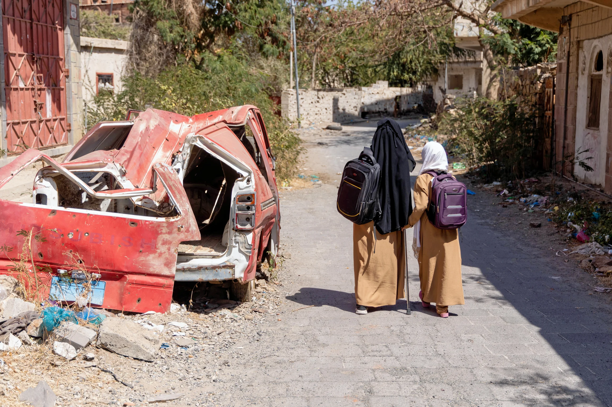
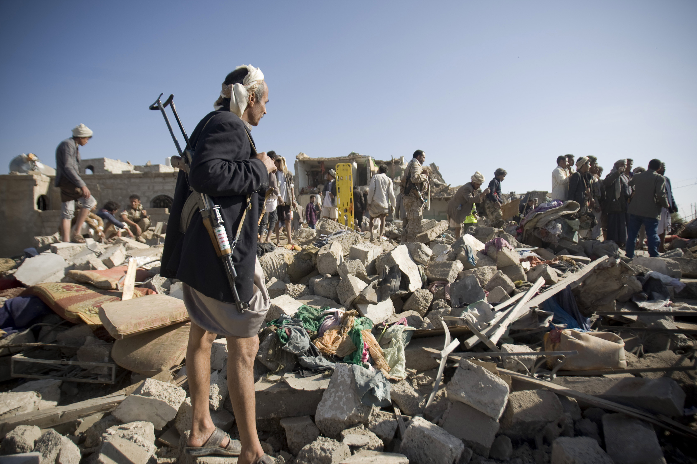
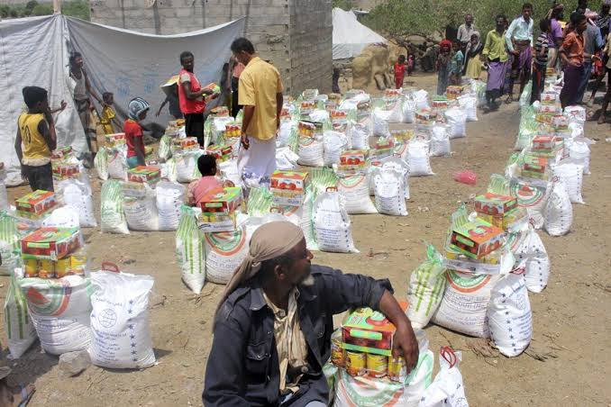
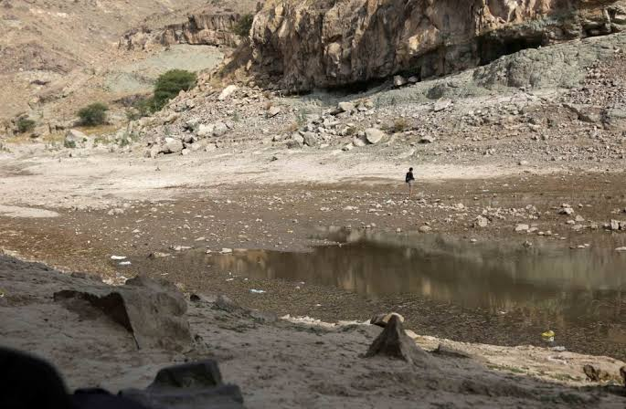
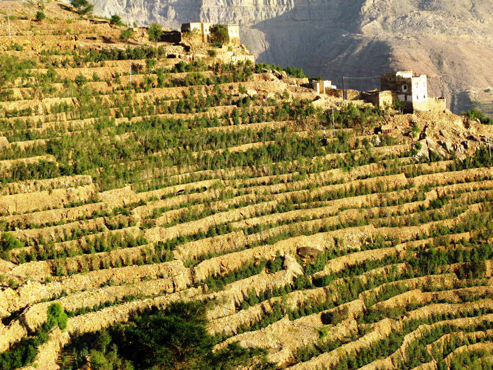
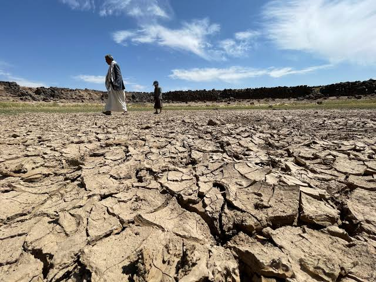
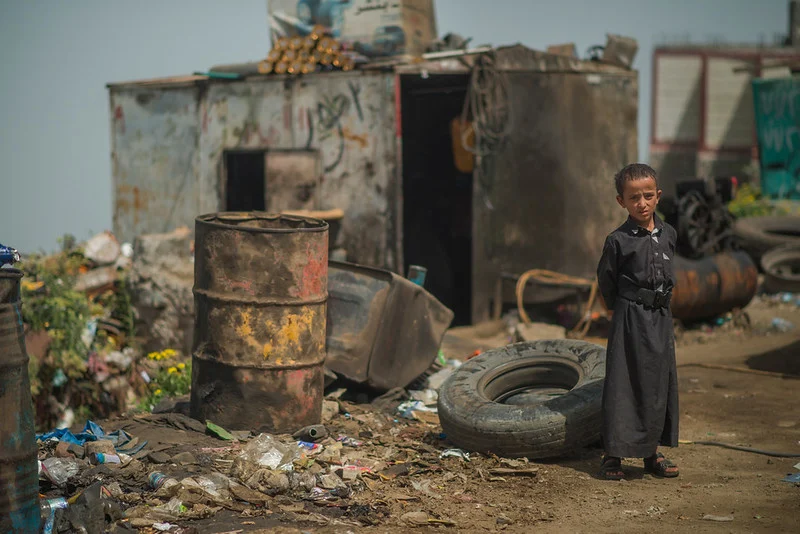
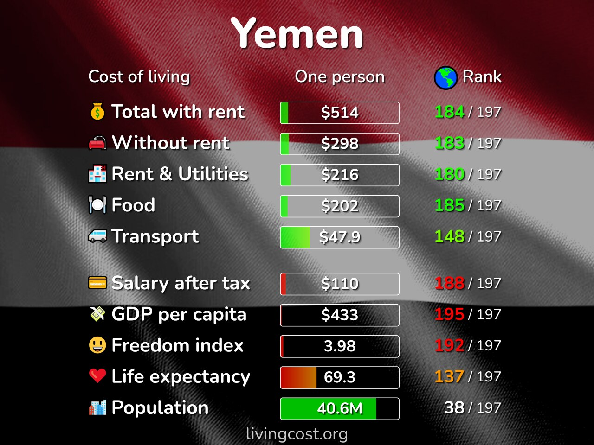
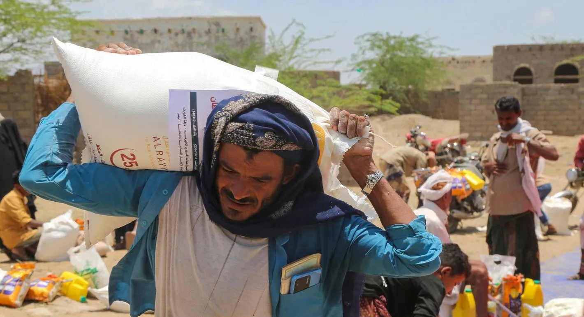

Challenges to Food Security
What are some challenges Yemen is going through right at this moment?

Challenges
What are the Challenges?
Conflict
What is the Challenge?
Yemen has experienced prolonged conflict and political instability. The conflict has damaged infrastructure, disrupted markets, displaced people and made it more difficult for farmers to produce and sell food.

How does conflict cause food insecurity?
Conflict can damage farms, roads, irrigation systems, markets and storage facilities. It can also make it dangerous for farmers and traders to travel.
When infrastructure is damaged, food becomes harder and more expensive to transport. Conflict can also reduce employment and household incomes, meaning people have less money to buy food.
The conflict has also contributed to economic fragmentation and interruptions to essential services. The World Bank reports that Yemen’s economic output has been severely affected by conflict and that damage to infrastructure has disrupted essential services.
The latest IPC analysis also identifies conflict and instability as major factors contributing to Yemen’s food-security crisis.

What does the evidence tell us?
The evidence shows that food insecurity in Yemen is not simply caused by a lack of food. Conflict makes it harder to produce, transport, purchase and access food.
Conflict therefore affects several parts of food security at the same time.
Water Scarcity
What is the Challenge?
Yemen is one of the world’s most water-scarce countries. Agriculture uses most of the country’s available water, while groundwater is being extracted faster than it is naturally replenished.
FAO estimates that Yemen has about 2.5 billion cubic metres of renewable water resources each year, while consumption is around 3.5 billion cubic metres.

How does water scarcity cause food insecurity?
Farmers need water to grow crops and raise livestock. When water supplies decline, farmers may have to reduce the amount of land they cultivate or abandon crops completely.
Yemen’s agriculture also relies heavily on groundwater. FAO reports that groundwater is being depleted at roughly twice the rate at which it is replenished.
Climate change is making the problem more difficult because rainfall patterns are becoming less predictable and water deficits are increasing.

What does the evidence tell us?
Water scarcity directly limits food production.
If farmers cannot access affordable and reliable water, fewer crops can be grown. This reduces local food supplies and can increase dependence on expensive food imports and humanitarian assistance.

Poverty and Rising Food Prices
What is the Challenge?
Poverty and economic instability make it difficult for families to afford food even when food is available in markets.
Yemen’s economy has been severely affected by conflict, currency depreciation, inflation and reduced employment opportunities.

How does poverty cause food insecurity?
When household incomes fall while food prices rise, families have less purchasing power.
The World Bank reported that in government-controlled areas, the price of a basic food basket was 26% higher in June 2025 than one year earlier. Currency depreciation made imported goods and other essential products more expensive.
Yemen also depends heavily on imported food. This means changes in global food, fuel and transport prices can have a major effect on Yemeni households.

What does the evidence tell us?
The evidence shows that food insecurity is strongly connected to people’s ability to afford food.
Even if markets contain food, families experiencing poverty may not have enough income to buy it. This means economic stability and employment are important parts of improving food security.
